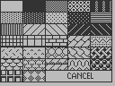

;****************************** ;* S/geoBMode3 ;* Main, unwraps ;****************************** .if Pass1 .noeqin .noglbl .include GEOSequates .eqin .glbl .endif .psect jmp Main3 ; VPRGbase + 0 jmp Mod3Click ; VPRGbase + 3 jmp Mod3Recv ; VPRGbase + 6 jmp Mod3Drag ; VPRGbase + 9 jmp Mod3Press ; VPRGbase + 12 jmp ReMain3 ; VPRGbase + 15 Main3: ldb dispBufferOn,#ST_WR_FORE | ST_WR_BACK ldb Tool,#2 ; selection tool is default ldb FilPattern,#1 ; default pattern is filled ldb LbxPattern,#$ff; default pattern for line boxes ldb TxtPattern,#0 ; default text pattern ReMain3: jsr Crsr3Off ; kill the little blinker jsr ReDialog jsr UnWrap jsr ReClick jsr ReTool lda MenuMode ; has menu been initialiZed? bne 10$ inc MenuMode ; no, so initialiZe it ldw R0,#MyMenu lda #0 jsr DoMenu ; set up the pull-down windows bra 11$ ; and skip a redo 10$: jsr ReDoMenu 11$: mvb mouseOn,MenuSave ; save menu checking ldb dispBufferOn,#ST_WR_FORE | ST_WR_BACK rts ReDialog: ldw A0,#DataStart 10$: ldy #0 lda (A0),y ; look for dialog def cmp #51 beq 12$ jsr NxtItem ; not it, so go next cpw A0,EndOData blt 10$ ldy #0 11$: lda DiaT1,y ; none found, so add one sta (A0),y iny cpy #12 blt 11$ ldb SaveFlag,#$01 ; dirty up after the add avw #13,EndOData ; and adjust the end 12$: mvw A0,DlgPtr ; now write the dimensions ldy #4 13$: lda (A0),y sta DlgDims-4,y ; by using that nice little table iny cpy #10 blt 13$ mvw DlgDims,DlgByts mvw DlgDims+3,DlgByts+2 ldw A4,#DlgByts jsr RORING ldw A4,#DlgByts+2 jsr RORING avw #1,DlgByts avw #1,DlgByts+2 rts DiaT1: .byte 51,1,13,0,64,0,32,255,0,127,0,0,0 RORING: ldy #1 lda (A4),y ; start division body lsr a sta (A4),y dey lda (A4),y ror a lsr a lsr a clc adc #1 ; and add one? sta (A4),y iny lda (A4),y adc #0 sta (A4),y rts ReTool: ldb dispBufferOn,#ST_WR_FORE jsr i_BitmapUp .word Mod3Bar .byte 0 .byte 20 .byte Bar3wid .byte Bar3hit mvb Tool,A2L jsr ChkClick ; to get Tools dims jsr InvertRectangle ldb dispBufferOn,#ST_WR_FORE | ST_WR_BACK rts NxtItem: cpw A0,EndOData bne 10$ rts 10$: ldy #2 lda (A0),y sta NextTmp iny lda (A0),y sta NextTmp+1 adw NextTmp,A0 rts ReClick: ldb A2L,#20 ldb A2H,#20+16 ; init first box ldw A3,#0 ldw A4,#15 ldb Temp,#1 10$: ldw A5,#0 mvb Temp,A6L jsr SetClick lda A3L ; are we on the left bne 11$ ldb A3L,#16 ; yes, so move to the right ldb A4L,#31 bra 12$ ; stay on same row, height 11$: ldb A3L,#0 ldb A4L,#15 ; down a row, please avb #16,A2L avb #16,A2H 12$: inc Temp cbi Temp,#13 blt 10$ ; finish the top 12 ldb A4L,#31 ldw A5,#0 mvb Temp,A6L ; this is dialog jsr SetClick avb #16,A2L avb #16,A2H ldw A5,#0 ldb A6L,#14 ; this is undo jsr SetClick rts UnClick: ldb Temp,#0 sta A2L sta A2H sta A3L sta A3H sta A4L sta A4H sta A5L sta A5H 10$: lda Temp sta A6L jsr SetClick inc Temp cbi Temp,#15 blt 10$ rts UnWrap: mvw rightMargin,UnWr1 ldb dispBufferOn,#ST_WR_FORE | ST_WR_BACK jsr i_GraphicsString .byte NEWPATTERN,0 .byte MOVEPENTO,0,0,0 .byte RECTANGLETO UnWr1: .word 319 .byte 199 .byte 0 ; done clearing screen jsr ReDialog mvw DlgPtr,A0 ; do the dialog box by hand ldy #1 lda (A0),y ; get the pattern jsr SetPattern ; and set it, dammit jsr LdDialog lda #$ff ; assume the box is clear jsr FrameRectangle ; outline it first jsr LdDialog mvw R4,R3 ; make the right the left avw #9,R4 ; move the right right avb #8,R2L avb #8,R2H jsr Rectangle ; draw the right shadow jsr LdDialog mvb R2H,R2L ; make the bottom the top avw #9,R4 ; move the right right avw #8,R3 avb #8,R2H jsr Rectangle ; now it's done!, yea! ldw A0,#DataStart jsr UnWrpLp1 ldw A0,#DataStart jmp UnWrpLp2 LdDialog: mvw DlgDims,R3 mvb DlgDims+2,R2L mvw DlgDims+3,R4 mvb DlgDims+5,R2H rts UnWrpLp1: jsr UnWrpNx bne 10$ rts ; all done 10$: cmp #60 ; is it line, linebox, or fbox? blt 15$ cmp #62 ; 60=line, 61=linebox, 62=fbox bgt 15$ jsr UnWrBox ; get R2-R4 lda Temp+3 ; now get command back cmp #60 ; do a simple line please bne 13$ mvw R2,R11 ; put y in right place lda #0 sec jsr DrawLine ; draw the damn line jmp UnWrapDo 13$: cmp #61 ; unwrap a lined box please bne 14$ mvb Temp+4,LbxPattern lda LbxPattern ; set this funny number up jsr FrameRectangle jmp UnWrapDo 14$: cmp #62 ; do a filled box please bne 15$ mvb Temp+4,FilPattern jsr SetPattern ; set the fill box pattern jsr Rectangle jmp UnWrapDo 15$: cmp #53 ; do some text please bne 16$ jsr UnWrBox ; get R2-R4 -- for what its worth jsr StdDlgAd mvb Temp+4,TxtPattern jsr UnWrTxt jmp UnWrapDo 16$: cmp #63 ; is it bitmap of some sort? bne 17$ jsr UnWrBox mvw R3,R1 mvb R4L,R2H ; get bytes in right place mvw A0,R0 avw #8,R0 jsr BitmapUp ; put it on the screen! jmp UnWrapDo 17$: cmp #54 bne 18$ mvw A0,Mod3IFlg jsr Crsr3On jmp UnWrapDo ; don't unwrap clickboxes yet (top) 18$: cmp #56 bne 19$ jsr DrawFBox jmp UnWrapDo 19$: cmp #58 bne 99$ jsr UnWrVar 99$: jmp UnWrapDo UnWrapDo: adw Temp,A0 ; get ready for next command lda #0 sta $2e ; always make sure text patt ok jmp UnWrpLp1 StdDlgAd: adb DlgDims+2,R2L adb DlgDims+2,R2H adw DlgDims,R3 ; adjust for movement adw DlgDims,R4 rts UnWrpLp2: jsr UnWrpNx ; now unwrap user click boxes beq 99$ cmp #59 beq 10$ cmp #52 beq 10$ adw Temp,A0 ; get ready for next command jmp UnWrpLp2 99$: rts ; all done 10$: jsr UnWrBox mvw R3,R1 adb DlgByts,R1L ; get actual x by adding dlg left adb DlgDims+2,R1H ; get actual y by adding dlg top mvb R4L,R2H ; get bytes in right place cbi Temp+3,#59 beq 11$ lda Temp+4 ; get user icon type asl a tay lda SysBoxT,y sta R0L ; now get sys box address iny lda SysBoxT,y sta R0H bne 12$ 11$: mvw A0,R0 avw #8,R0 12$: jsr BitmapUp ; put it on the screen! adw Temp,A0 ; get ready for next command jmp UnWrpLp2 UnWrTxt: lda TxtPattern sta $2e ; set the fill box pattern mvw R3,R11 mvb R2H,R1H ; position the cursor svb #2,R1H ; underline adjustment mvw A0,R0 avw #10,R0 jsr PutString ; write out the text!! lda #0 sta $2e rts UnWrVar: jsr UnWrBox jsr StdDlgAdj mvw R3,R11 mvb R2H,R1H ; position the cursor svb #2,R1H ; underline adjustment ldw R0,#VarStr jsr PutString ; write out the text!! rts VarStr: .byte 27,25,"?",27,0 SysBoxT: .word $0000,OKpic,CANpic,YESpic,NOpic,OPENpic,DISKpic UnWrapGet: lda (A0),y iny rts UnWrBox: ldy #4 jsr UnWrapGet ; get start x lsb sta R3L jsr UnWrapGet ; get start x hsb sta R3H jsr UnWrapGet ; get start y sta R2L jsr UnWrapGet ; get end x lsb sta R4L jsr UnWrapGet ; get end x hsb sta R4H jsr UnWrapGet ; get end y sta R2H rts UnWrpNx: cpw A0,EndOData ; out of data yet? blt 11$ lda #0 rts ; nothing to do, exit 11$: ldy #1 lda (A0),y ; set the pattern first sta Temp+4 ; the temp place for patterns ldy #2 ; then get bytes lsb lda (A0),y sta Temp iny lda (A0),y ; then bytes hsb sta Temp+1 ldy #0 lda (A0),y ; now get command sta Temp+3 rts Mod3Patt:  Patt3wid = picW Patt3hit = picH Mod3Bar: Bar3wid = picW Bar3hit = picH OKpic: CANpic: YESpic: NOpic: OPENpic: DISKpic: .ramsect TTemp: .block 40 ; temporary string holders NTemp: .block 40 ; temporary name storage